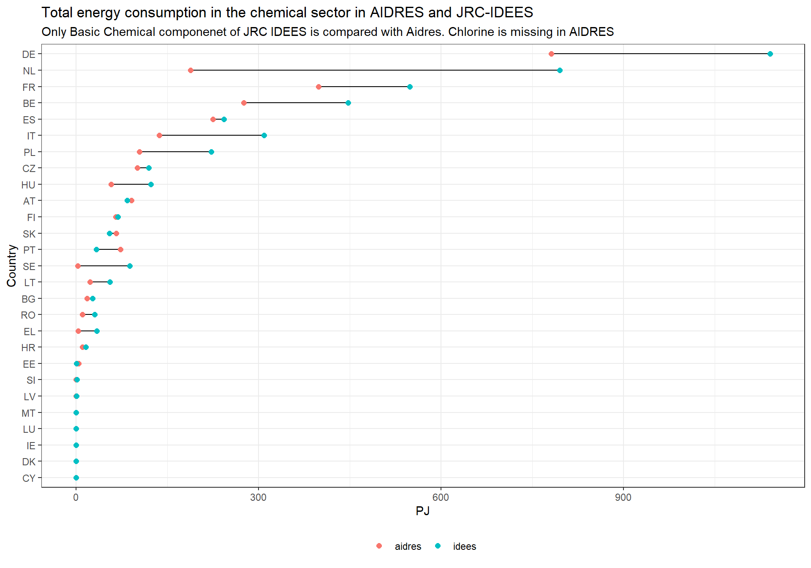
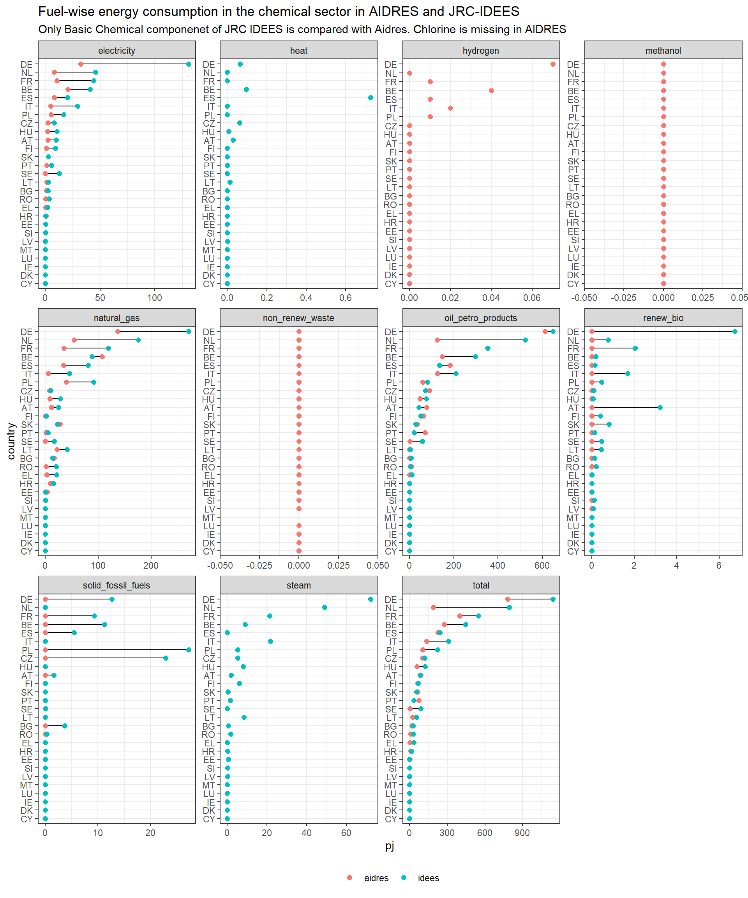
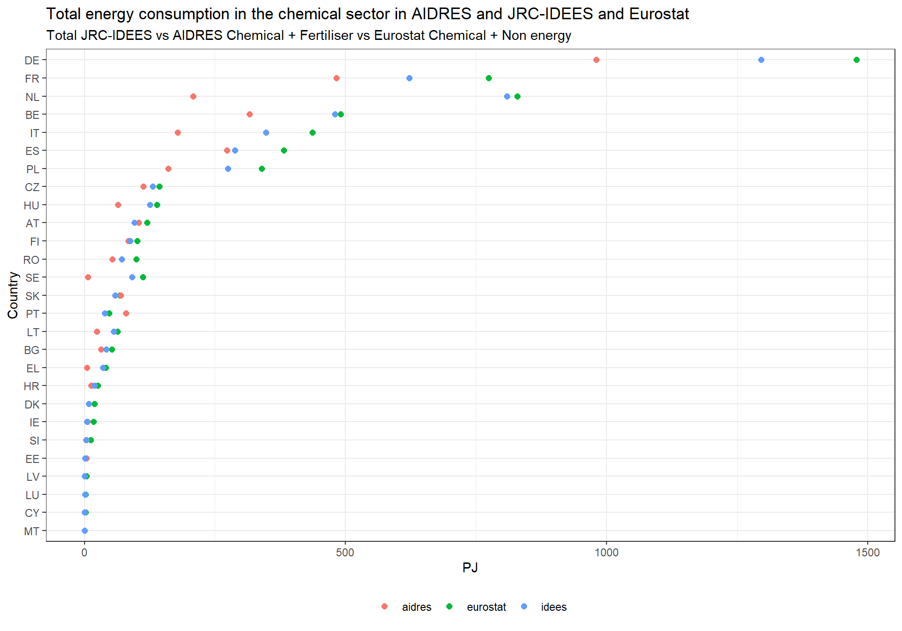
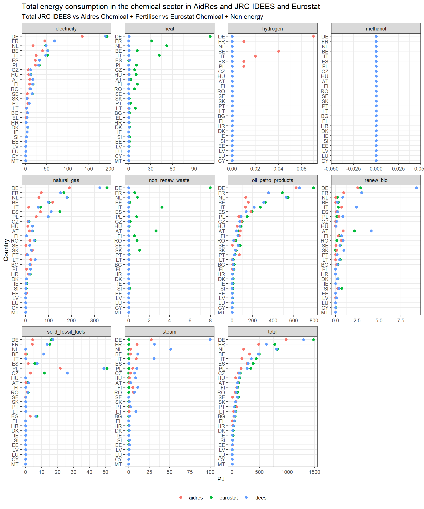

This is a stand-alone quarto document with code chunks and documentation for comparing Chemical sector energy consumption in AIDRES, EUROSTAT, and JRC-IDEES databases.
AIDRES only covers ‘basic chemicals’ omitting chlorine. However, in JRC IDEES database there is a breakup of basic chemical, other chemical, and pharma. Though AIDRES has separate fertilizer sector, we add it to chemical for comparison purpose. First, we compare AIDRES chemical data with JRC-IDEES basic chemical. Subsequently, we add chlorine energy consumption from Eurochlor database to the AIDRES and compare AIDRES + Eurochlor (Chlorine) with JRC_IDEES basic chemicals.
As AIDRES does not contain other chemicals we take it directly from JRC IDEES database. Finally we compare AIDRES + Eurochlor (Chlorine) + Chem others IDEES, total IDEES, and EUROSTAT + non-energy
Therefore, three comparison steps:
Compare AIDRES vs IDEES basic chemicals (IDEES)
Compare with AIDRES + Eurochlor (Chlorine) vs JRC-IDEES basic chemicals
Compare AIDRES + Eurochlor (Chlorine) + Chem others JRC-IDEES, total JRC-IDEES, and EUROSTAT + non-energy
Using this file
The files are produced using R and RStudio. Though this document can be executed using command line, it is recommended to use RStudio for rendering.
Clone this repository to your computer. Open the mopo_repo.Rproj (RStudio needs to be installed) file. Open refinery_analysis.qmd and click on render button (Crtl + Shift + K).
Loading libraries
Checking whether the required packages are installed or not. If not, install them and load them. If they are already installed, just load them.
# A tibble: 27 × 2
country country_iso_code
<chr> <chr>
1 Austria AT
2 Belgium BE
3 Bulgaria BG
4 Croatia HR
5 Cyprus CY
6 Czechia CZ
7 Denmark DK
8 Estonia EE
9 Finland FI
10 France FR
# ℹ 17 more rows
JRC-IDEES Basic Chemical Energy Consumption
Download IDEES excel files
JRC‑IDEES provides a consistent set of disaggregated energy-economy-emissions data for each Member State of the European Union, covering all sectors of the energy system for the 2000-2021 period: industry, buildings, transport, and power generation. This data complies with Eurostat energy balances while providing a plausible decomposition of energy consumption into specific processes and end uses(Mate et al. 2024).
Checking whether there is a directory (./input_data/jrc_idees_2021/industry) containing JRC-IDEES excel files for energy balance. If not (only checking with JRC-IDEES-2021_Industry_AT.xlsx), creating the directory, downloading the zipped files, and extracting them for each country.
Show the code
idees_data <-here('input_data', 'jrc_idees_2021', 'industry')if (!dir.exists(idees_data)){print("Directory doesn't exists! Creating one")dir.create(idees_data, recursive =TRUE)print("Downloading files")for(country_code in country_codes$country_iso_code){ zip_file <-paste0("https://jeodpp.jrc.ec.europa.eu/ftp/jrc-opendata/JRC-IDEES/JRC-IDEES-2021_v1/JRC-IDEES-2021_", country_code) filename <-paste0("JRC-IDEES-2021_Industry_", country_code, ".xlsx")archive_extract(archive = zip_file,dir = idees_data,files = filename) } } else {print(paste('Directory', idees_data, 'already exists!'))if(!file.exists(here(idees_data, 'JRC-IDEES-2021_Industry_AT.xlsx'))){print("But files does not exists! downloading them")for(country_code in country_codes$country_iso_code){ zip_file <-paste0("https://jeodpp.jrc.ec.europa.eu/ftp/jrc-opendata/JRC-IDEES/JRC-IDEES-2021_v1/JRC-IDEES-2021_", country_code) filename <-paste0("JRC-IDEES-2021_Industry_", country_code, ".xlsx")archive_extract(archive = zip_file,dir = idees_data,files = filename) } } else {print(paste('Files also already exist inside the directory, not downloading them again!')) }}
[1] "Directory C:/Users/VDPUTH/OneDrive - VITO/Mopo/Mopo_repo_github/input_data/jrc_idees_2021/industry already exists!"
[1] "Files also already exist inside the directory, not downloading them again!"
Establishing AIDRES database connection and fetching tables
AIDRES database is open source (Vermeiren et al. 2023). However the data is available as a raw .sql file which needs to be further used to setup a PostgreSQL database connection to fetch various tables. The data is also available as an Excel workbook. However, it is very customized to be used for specific analysis.
Importing AIDRES data from local .csv files
However, for an external user setting up a PostgreSQL server is not straight forward. Therefore, AIDRES tables are provided with this repository in the input_data\aidres_data directory.
the AIDRES tables used for this analysis are first exported into .csv files and then they are used further in the analysis. Following code chunks create the directory (input_data\aidres_data) for storing the AIDRES files, and exports the AIDRES data files into .csv format. However, they are currently deactivated as we provide the files already with the repo.
Show the code
aidres_data <-here('input_data', 'aidres_data')if (!dir.exists(aidres_data)){print("AIDRES input data folder doesn't exist. Request VITO to provide the data")dir.create(aidres_data)} else {print("AIDRES input data directory already exists. Not creating a new one!")print("AIDRES data tables also exist!")}
[1] "AIDRES input data directory already exists. Not creating a new one!"
[1] "AIDRES data tables also exist!"
The following AIDRES data tables namely aidres_scenarios.csv, aidres_sectors.csv, aidres_result.csv, aidres_configurations.csv, aidres_perton.csv are made available in the aidres_data folder. The code chunk is currently deactivated.
Dumping AIDRES PSQL tables to .csv files (currently deactivated)
# A tibble: 338 × 9
country_code country indicators cement chemical fertiliser glass refineries
<chr> <chr> <chr> <dbl> <dbl> <dbl> <dbl> <dbl>
1 AT Austria alternative… 3.12 0 0 0 0
2 AT Austria biomass_pj_y 0 0 0 0 0
3 AT Austria biomass_was… 1.87 0 0 0 0
4 AT Austria coal_pj_y 4.85 0 0 0 0
5 AT Austria coke_pj_y 0 0 0 0 0
6 AT Austria crude_oil_p… 0 0 0 0 416.
7 AT Austria electricity… 1.22 1.56 0.795 0.619 0.888
8 AT Austria hydrogen_pj… 0 0 0 0.025 0
9 AT Austria methanol_pj… 0 0 0 0 0
10 AT Austria naphtha_pj_y 0 77.0 0 0 0
# ℹ 328 more rows
# ℹ 1 more variable: steel <dbl>
# A tibble: 234 × 4
country_code country fuel chem_aidres
<chr> <chr> <chr> <dbl>
1 AT Austria electricity 2.36
2 AT Austria hydrogen 0
3 AT Austria methanol 0
4 AT Austria natural_gas 11.9
5 AT Austria total 91.3
6 AT Austria solid_fossil_fuels 0
7 AT Austria renew_bio 0
8 AT Austria non_renew_waste 0
9 AT Austria oil_petro_products 77.0
10 BE Belgium electricity 20.7
# ℹ 224 more rows
EUROSTAT Chemical Energy Consumption
Downloading Eurostat energy balance
EUROSTAT API is used to dynamically fetch EUROSTAT data using eurostat package (Lahti et al. 2017). Please refer this link to more about the usage of the eurostat package.
For chemical sector aggregated energy balance data of EUROSTAT (nrg_bal_c) is used.
Show the code
dat_aggregated_chem <-get_eurostat('nrg_bal_c', filters =list(time =2018),time_format ="num", type ='label', stringsAsFactors =TRUE)
We include aggregated total non-energy consumption to the Chemical sector. for EUROSTAT includes non-energy; chemical for AIDRES includes Fertilizer also.
# A tibble: 216 × 5
year country_code country fuel chem_eurostat
<dbl> <chr> <chr> <chr> <dbl>
1 2018 AT Austria electricity 17.1
2 2018 AT Austria heat 2.61
3 2018 AT Austria natural_gas 30.0
4 2018 AT Austria non_renew_waste 2.64
5 2018 AT Austria oil_petro_products 64.6
6 2018 AT Austria renew_bio 2.18
7 2018 AT Austria solid_fossil_fuels 0.953
8 2018 AT Austria total 120.
9 2018 BE Belgium electricity 52.6
10 2018 BE Belgium heat 11.6
# ℹ 206 more rows
Joining AIDRES and EUROSTAT Chemical energy consumption
# A tibble: 536 × 7
country_code country fuel year sector source pj
<chr> <chr> <chr> <dbl> <chr> <chr> <dbl>
1 AT Austria electricity 2018 chem eurostat 17.1
2 AT Austria electricity 2018 chem aidres 2.36
3 AT Austria heat 2018 chem eurostat 2.61
4 AT Austria heat 2018 chem aidres NA
5 AT Austria natural_gas 2018 chem eurostat 30.0
6 AT Austria natural_gas 2018 chem aidres 11.9
7 AT Austria non_renew_waste 2018 chem eurostat 2.64
8 AT Austria non_renew_waste 2018 chem aidres 0
9 AT Austria oil_petro_products 2018 chem eurostat 64.6
10 AT Austria oil_petro_products 2018 chem aidres 77.0
# ℹ 526 more rows
Compare AIDRES Chemical + Fertiliser vs JRC-IDEES basic chemicals
Creating output directory
Show the code
output_dir <-here('outputs', 'chemical')if (!dir.exists(output_dir)){print("Output directory doesn't exist. Creating a new one!")dir.create(output_dir)} else {print("Output directory already exists. Not creating a new one!")}
[1] "Output directory doesn't exist. Creating a new one!"
# A tibble: 484 × 4
country_code fuel source pj
<chr> <chr> <chr> <dbl>
1 AT electricity aidres 2.36
2 AT electricity idees 9.98
3 AT heat aidres NA
4 AT heat idees 0.0284
5 AT hydrogen aidres 0
6 AT methanol aidres 0
7 AT natural_gas aidres 11.9
8 AT natural_gas idees 24.8
9 AT non_renew_waste aidres 0
10 AT oil_petro_products aidres 77.0
# ℹ 474 more rows
Plots
Comparison graph total
Show the code
compare_aidres_idess_basic_chem |>filter(fuel =='total') |>ggplot(aes(pj, fct_reorder(country_code, pj, .fun = sum))) +geom_line()+geom_point(aes(colour = source), size =2) +theme_bw() +labs(title ='Total energy consumption in the chemical sector in AIDRES and JRC-IDEES',subtitle ='Only Basic Chemical componenet of JRC IDEES is compared with Aidres. Chlorine is missing in AIDRES',y ='Country',x ='PJ') +theme(legend.position ="bottom")+theme(legend.title=element_blank()) -> p_chem_comparep_chem_compare

Show the code
ggsave(here(output_dir, 'chem_fec_basic_compare_total_aidres_idees.pdf'), width =10, height =10, units ='in', dpi =900)
Comparison graph fuels
Show the code
compare_aidres_idess_basic_chem |>ggplot(aes(pj, fct_reorder(country_code, pj, .fun = sum))) +geom_line()+geom_point(aes(colour = source), size =2) +facet_wrap(~fuel, ncol =4, scales ="free") +theme_bw() +labs(title ='Fuel-wise energy consumption in the chemical sector in AIDRES and JRC-IDEES',subtitle ='Only Basic Chemical componenet of JRC IDEES is compared with Aidres. Chlorine is missing in AIDRES',y ='country') +theme(legend.position ="bottom")+theme(legend.title=element_blank()) -> p_chem_comparep_chem_compare

Show the code
ggsave(here(output_dir, 'chem_fec_basic_compare_fuel_aidres_idees.pdf'), width =10, height =10, units ='in', dpi =900)
AIDRES does not contain the information of Chlorine. Eurochlor database is used to procure country wise Chlorine production. Specific energy consumption values of various process routes for Chlorine production is taken from JRC-EU-TIMES model.
Creating input directory for Chlorine data
Show the code
eurochlor_data <-here('input_data', 'eurochlor_data')if (!dir.exists(eurochlor_data)){print("Eurochlor input data folder doesn't exist. Request VITO to provide the data")dir.create(eurochlor_data)} else {print("Eurochlor input data directory already exists. Not creating a new one!")print("Eurochlor data tables also exist!")}
[1] "Eurochlor input data directory already exists. Not creating a new one!"
[1] "Eurochlor data tables also exist!"
# A tibble: 72 × 4
country_iso_code country production_routes kt
<chr> <chr> <chr> <dbl>
1 AT Austria diapharm 0
2 AT Austria membrane 75
3 AT Austria murcury 0
4 AT Austria other 0
5 BE Belgium diapharm 0
6 BE Belgium membrane 1074
7 BE Belgium murcury 0
8 BE Belgium other 0
9 CZ Czechia diapharm 0
10 CZ Czechia membrane 82
# ℹ 62 more rows
# A tibble: 36 × 3
country_code fuel pj_cl
<chr> <chr> <dbl>
1 AT electricity 0.562
2 AT total 0.562
3 BE electricity 8.06
4 BE total 8.06
5 CZ electricity 0.615
6 CZ total 0.615
7 DE electricity 43.9
8 DE total 43.9
9 EL electricity 0.075
10 EL total 0.075
# ℹ 26 more rows
# A tibble: 752 × 4
country_code fuel source pj
<chr> <chr> <chr> <dbl>
1 AT electricity eurostat 17.1
2 AT electricity aidres 2.36
3 AT electricity idees 9.98
4 AT heat eurostat 2.61
5 AT heat aidres NA
6 AT heat idees 0.0284
7 AT hydrogen eurostat NA
8 AT hydrogen aidres 0
9 AT methanol eurostat NA
10 AT methanol aidres 0
# ℹ 742 more rows
AIDRES database does not have information of Other Chemicals and Pharmaceuticals. Together we call them ‘Other Chemicals’. JRC-IDEES reports both production volume (in ethylene equivalent) and the energy consumption for Other Chemicals. For simplicity we only track energy demand for Other Chemicals.
# A tibble: 885 × 4
country_code fuel source pj
<chr> <chr> <chr> <dbl>
1 AT electricity eurostat 17.1
2 AT electricity aidres 9.69
3 AT electricity idees 16.7
4 AT heat eurostat 2.61
5 AT heat aidres 0.00858
6 AT heat idees 0.0370
7 AT hydrogen eurostat 0
8 AT hydrogen aidres 0
9 AT hydrogen idees 0
10 AT methanol eurostat 0
# ℹ 875 more rows
Comparison graph total
Show the code
chem_fec_source2 |>filter(fuel =='total') |>ggplot(aes(pj, fct_reorder(country_code, pj, .fun = sum))) +geom_point(aes(colour = source), size =2) +theme_bw() +labs(title ='Total energy consumption in the chemical sector in AIDRES and JRC-IDEES and Eurostat',subtitle ='Total JRC-IDEES vs AIDRES Chemical + Fertiliser vs Eurostat Chemical + Non energy',y ='Country',x ='PJ') +theme(legend.position ="bottom")+theme(legend.title=element_blank()) -> p_chem_comparep_chem_compare

Show the code
ggsave(here(output_dir, 'chem_fec_total_compare_total_aidres_idees_eurostat.pdf'), width =10, height =10, units ='in', dpi =900)
Comparison graph fuels
Show the code
chem_fec_source2 |>ggplot(aes(pj, fct_reorder(country_code, pj, .fun = sum))) +geom_point(aes(colour = source), size =2) +facet_wrap(~fuel, ncol =4, scales ="free") +theme_bw() +labs(title ='Total energy consumption in the chemical sector in AidRes and JRC-IDEES and Eurostat',subtitle ='Total JRC IDEES vs Aidres Chemical + Fertiliser vs Eurostat Chemical + Non energy',y ='Country',x ='PJ') +theme(legend.position ="bottom")+theme(legend.title=element_blank()) -> p_chem_comparep_chem_compare

Show the code
ggsave(here(output_dir, 'chem_fec_total_compare_fuel_aidres_idees_eurostat.pdf'), width =10, height =12, units ='in', dpi =900)
Specific energy consumption for Chlorine is taken from JRC-EU-TIMES model. For other chemicals specific energy consumption values is calculated using JRC-IDEES data aggregating over the individual processes. Final energy demand for Other Chemicals, specific energy consumption of Other Chemicals, Chlorine production volume, and specific energy consumption for Chlorine is written to outputs/chemicals/chem_aidres_extra.xlsx' file.
# A tibble: 216 × 4
country_code fuel source pj
<chr> <chr> <chr> <dbl>
1 AT electricity idees 6.76
2 AT heat idees 0.009
3 AT natural_gas idees 3.38
4 AT oil_petro_products idees 0.094
5 AT renew_bio idees 0.861
6 AT solid_fossil_fuels idees 0.175
7 AT steam idees 0.495
8 AT total idees 11.8
9 BE electricity idees 11.0
10 BE heat idees 0.025
# ℹ 206 more rows
Show the code
chlorine_sec |>mutate(unit ='pj_mt') |>rename('electricity'= pj_mt) |>select(process_routes, unit, everything()) -> chlorine_sec_chlorine_sec_
# A tibble: 4 × 3
process_routes unit electricity
<chr> <chr> <dbl>
1 murcury pj_mt 12.8
2 diapharm pj_mt 10.7
3 membrane pj_mt 7.5
4 other pj_mt 10.3
Show the code
chlorine_data_2018
# A tibble: 72 × 4
country_iso_code country production_routes kt
<chr> <chr> <chr> <dbl>
1 AT Austria diapharm 0
2 AT Austria membrane 75
3 AT Austria murcury 0
4 AT Austria other 0
5 BE Belgium diapharm 0
6 BE Belgium membrane 1074
7 BE Belgium murcury 0
8 BE Belgium other 0
9 CZ Czechia diapharm 0
10 CZ Czechia membrane 82
# ℹ 62 more rows
Lahti, Leo, Janne Huovari, Markus Kainu, and Przemysław Biecek. 2017. “Retrieval and Analysis of Eurostat Open Data with the eurostat Package.”The R Journal 9 (1): 385–92. https://doi.org/10.32614/RJ-2017-019.
Vermeiren, Karolien, Wim Clymans, Lorenz Hambsch, and Leen Van Esch. 2023. “AIDRES - Advancing Industrial Decarbonization by Assessing the Future Use of Renewable Energies in Industrial Processes.” European Commission, Joint Research Centre. http://data.europa.eu/89h/14914982-70a9-4d1d-a2fc-cdee4a1d833d.